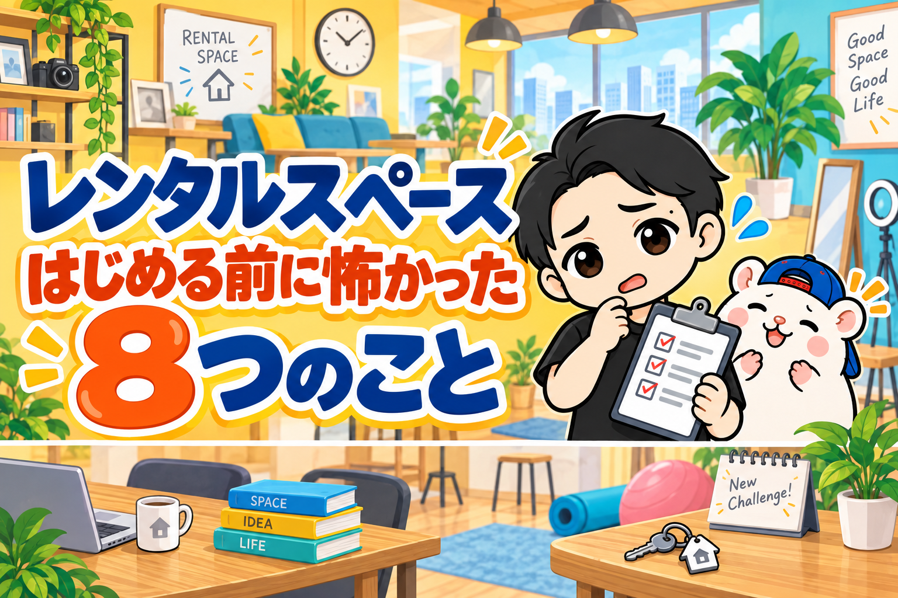
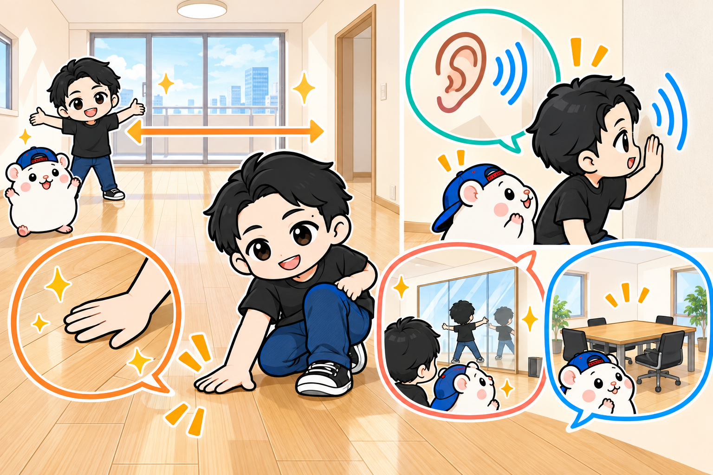
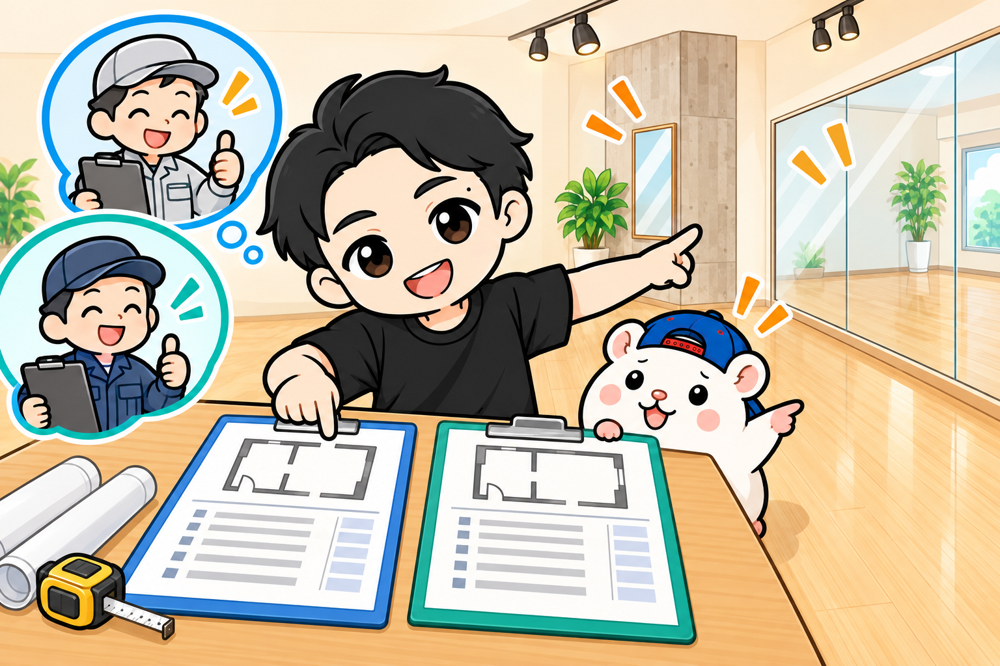
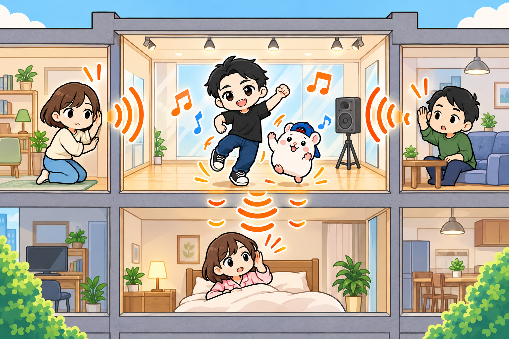
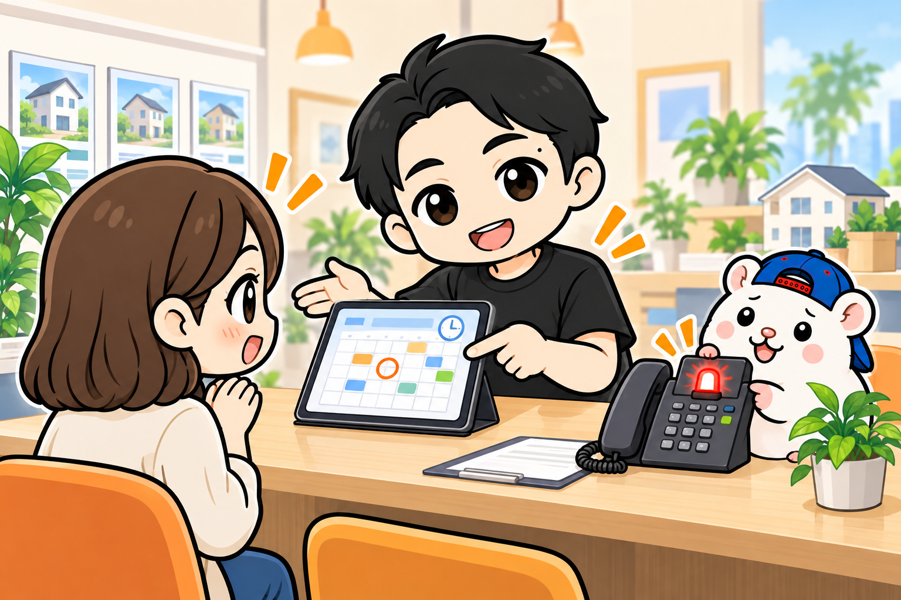
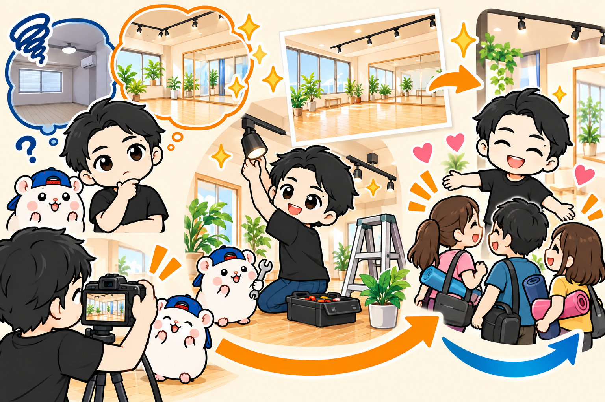
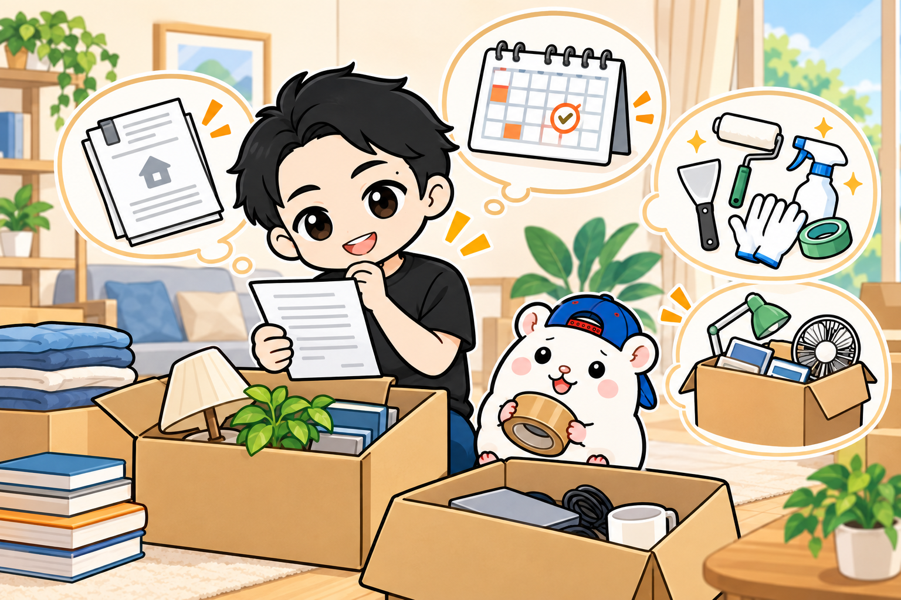
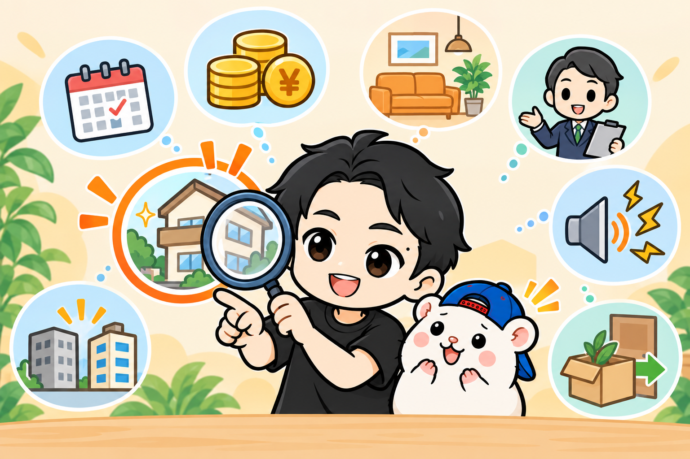

レンタルスペースを始める前、
ぼくも物件を借りるのが怖かったです。
予約が入らなくても、家賃は毎月かかる。
物件選びを間違えたら、簡単にはやり直せない。
5年で23部屋を運営してきた今、当時の不安を8つに分けて答えてみます。
「自分にもできるのかな」で止まっている人は、いちばん気になるところから読んでください。
「初期費用はいくらか」「駅に近くても、階段だけの上階はどうか」という質問を受けます。
始めたい気持ちはあっても、判断する基準が分からない。
ぼくも、そこが不安でした。
不安① 予約が入るか、利益が出るか
部屋を作って、予約サイトに登録する。
それだけでほんとに予約が入るのか。
入らなかったら、どうするのか。
ここは、契約する前に競合を調べます。
近くの同じ用途のスペースは、いくらで、どの曜日・時間帯に予約が入っているか。
写真や口コミも見て、選ばれている理由を探します。
競合の予約から売上を見積もって、手数料・家賃・光熱費・清掃費を引く。
利益が出る算段を付けてから、借りるか判断します。
予測どおりになる保証はありませんが、何も調べずに借りるのとは違います。
開業後に入らなければ、どこが埋まっていないかを見ます。
ぼくのダンススタジオにも、値段を高めにして予約が入りにくかった店がありました。
曜日と時間帯を調べ、料金を見直して、予約が増えました。
「予約がない」だけで止まらず、理由を分けて調べることです。
不安② この物件でいいのか

家賃が安いと、借りたくなります。
でも、その部屋で誰が何をするかが決まっていなければ、安くても判断できません。
ダンスなら、踊れる広さと、音・振動が周囲へ伝わらないか。
貸し会議室なら、集まりやすさと、仕事ができる設備。
用途によって、必要な条件が変わります。
ぼくは内見で、音を出したり、足を踏み鳴らしたりして確かめます。
写真でよく見えても、現地で分かることがあります。
「借りられる物件」と「自分の用途で使える物件」は、分けて考えてください。
▼物件を探す手順
https://rental-space.net/articles/2026-02-21-how-to-start-property-hunting.html
不安③ いくらお金がかかるのか
初期費用は、大きく分けると3つです。
- 物件の契約にかかるお金
- 内装・工事のお金
- 家具・設備・備品のお金
「家賃が払える」だけでは足りません。
開業の準備で使ったあと、手元にいくら残るかも見てください。
予約が増えるまでの家賃や、毎月の支払いがあるからです。
売上が想定の半分でも続けられるか。
生活に使うお金まで取り崩すことにならないか。
初期費用を回収するまでの期間と、手元のお金がもつ期間は、別々に考えたいところです。
▼ぼくの初期費用の実額
https://rental-space.net/articles/2026-08-25-rental-space-startup-cost.html
不安④ 内装は必要か、業者に高く取られないか

壁と床は変えたほうがいいのか。
業者に頼むとして、その見積もりは高いのか安いのか。
最初は相場も分かりません。
ぼくは、使えるものはそのまま使います。
ダンスなら、壁や照明を全部変えるより、鏡や床など、利用に必要な部分から考えます。
パーティーや撮影なら、部屋の雰囲気が選ばれる理由になるので、同じ考え方では決めません。
施工を頼むときは、複数社に現地を見てもらって見積もりを取ります。
同じ工事内容で比べて、自分でできる作業は分ける。
安さだけでなく、こちらの予算と意図を理解してくれるかも見ます。
不安⑤ 近隣からクレームが来たら

これは、ぼくも実際に経験しました。
ダンススタジオを、騒音のクレームで撤退しています。
利益は出ていたのに、続けられませんでした。
だから、音の問題は物件選びのときに確かめます。
下の階に何が入っているか、隣とどう接しているか。
「お客さんに静かにしてもらえば大丈夫」で決めないことです。
▼騒音・鍵・ダブルブッキングへの対応
https://rental-space.net/articles/2026-08-28-rental-space-trouble-response.html
不安⑥ 不動産屋さんから何を聞かれるのか

事業用の物件なんて、借りたことがない。
何を聞かれて、どう答えればいいのか。
ここも、最初は分かりませんでした。
ぼくが聞かれてきたのは、主にこの4つです。
- 又貸しではないのか
- 無人で大丈夫なのか
- 不特定多数の人が出入りするのか
- うるさくならないのか
使い方、予約の管理、トラブルのときの連絡方法を説明します。
通してもらうために、実際と違う使い方を伝えてはいけません。
自分がやる営業内容を、相手にも理解してもらう必要があります。
▼4つの質問への、ぼくの答え方
https://rental-space.net/articles/2026-08-27-landlord-questions.html
⑦ 競合が出てきたら

出店したときに競合が少なくても、そのままとは限りません。
ぼくの撮影スタジオも、競合が出てきて予約が落ちたことがあります。
競合が増えたら、料金だけでなく、写真・設備・使いやすさを見直します。
どんな人に選ばれているのか、自分の店と何が違うのか。
開業前の調査は、開業したあとも続きます。
ダンスなら、繰り返し来てくれる人や、教室の定期利用を増やすことも大切です。
毎回、新しいお客さんだけで予約を埋めようとすると、落ち着きません。
競合が来ない場所を探し続けるより、選んでもらえる理由を作っていきます。
⑧ 撤退しなければならなくなったら

借りる前は、始めるお金ばかり気になります。
でも、やめるときにもお金はかかります。
契約書で解約の予告期間を確認する。
退去までの家賃、部屋を元に戻す工事、備品の処分を考える。
敷金がどのくらい返る条件なのかも確認します。
ぼくは、騒音のほかに再開発によるビルの取り壊しでも撤退を経験しました。
売上が出ていれば、ずっと続けられるとは限りません。
予約が少ないなら、料金・写真・掲載内容など、改善できることはあります。
それでも、続けるために使えるお金には限りがあります。
始める費用と一緒に、やめるときの費用も確認してから契約してください。
まず、自分がいちばん不安なことを1つ

レンタルスペースを始める前の不安は、どれも具体的です。
予約、お金、物件、内装、不動産屋、近隣、競合、撤退。
「なんとなく怖い」の中身を分ければ、調べることが決まります。
予約が怖いなら、候補エリアの競合を見る。
費用が怖いなら、契約・内装・備品を書き出す。
不動産屋とのやり取りが怖いなら、聞かれる質問を読んでみる。
今いちばん不安なのは、8つのうちどれですか？
まずは、それを1つ確かめてみてください。
▼もう1つの副業、AI社員だけのeBay輸出店の実録🐹
https://note.com/cham_ebay
▼ブログ(レンスペ×eBay、全記事まとめ)
https://rental-space.net
競合の調べ方、利益の計算、物件への問い合わせ、内見、開業後の運営。
自分の候補物件で一つずつ確認したい人に向けて、実例と手順を教科書にまとめています。
レンタルスペース経営の教科書
https://rental-space.net/kyokasho/
販売価格は3部売れるごとに2,000円ずつ値上がりします（上限あり）。内容・最新価格は販売ページをご確認ください。